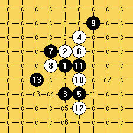

瑞星弱12求解
首页
习题专区
#1 瑞星弱12求解 作者：快乐天羽 发表时间：2008-11-24 11:53:39
请发表自己见解，哪个13手可以地毯胜出。
=======上图对应的爱五子棋谱代码如下，以便你拆解：========
h8h9h6i10i6i9g9g8j11i7i8i5
======================================================
#2 Re:瑞星弱12求解 作者：土豆 发表时间：2008-11-24 18:02:19
应该是G6活三吧
#3 Re:Re:瑞星弱12求解 作者：快乐天羽 发表时间：2008-11-24 20:00:51
请多发几步变化。
#4 Re:瑞星弱12求解 作者：t周 发表时间：2008-11-25 0:33:20
=======上图对应的爱五子棋谱代码如下，以便你拆解：========
h8h9h6i10i6i9g9g8j11i7i8h5k10
======================================================
#5 Re:瑞星弱12求解 作者：无尽 发表时间：2008-11-26 10:38:05

没找到流畅的杀法，最后只能暴力终结。
［ 快乐天羽 于 2008-11-26 23:47:53 时奖励此帖[金币加 20 威望加1］
#6 Re:Re:瑞星弱12求解 作者：快乐天羽 发表时间：2008-11-26 23:48:50
楼上的杀的很强悍，值得学习和鼓励
#7 Re:瑞星弱12求解 作者：闫荣辉 发表时间：2008-11-27 23:19:06
我还有两个没搞定！
#8 Re:瑞星弱12求解 作者：侯军学棋 发表时间：2008-12-1 11:37:10
有谱共享没
#9 Re:瑞星弱12求解 作者：侯军学棋 发表时间：2008-12-1 11:43:27
h8h9h6i10i6i9g9g8j
#10 Re:瑞星弱12求解 作者：迷途小猫 发表时间：2008-12-13 20:09:39
天羽老师，我好崇拜你啊
#11 Re:瑞星弱12求解 作者：砍 发表时间：2011-1-28 21:40:16
有没有棋谱啊，发个看看